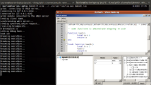
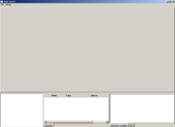
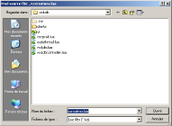
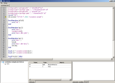
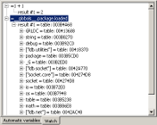

copyright © 2010-2016 Youen Toupin
GRLD uses wxLua which is freely available under the terms of the GNU LGPL.
GRLD uses lua, luasocket, LuaFileSystem and coxpcall, which are freely available under the terms of the MIT license.
GRLD itself is also distributed under the MIT license.
Graphical Remote Lua Debugger documentation
What is GRLD?
GRLD is a Graphical Remote Lua Debugger, designed to help find bugs in lua programs.
- Graphical user interface, intuitive and easy to use,
- Remote connection to the debugged program, to be able to debug on any plateform, including video game consoles,
- Lua Debugger wich features step-by-step execution, breakpoints, complete lua state exploration, custom expression evaluation, etc.
Installation
GRLD is structured as a client/server architecture. The client must be integrated in the application to debug. The server is a standalone application with a graphical user interface, that, once connected to one or more clients, will allow to control them, and gather information from them. The server uses only portable components (mainly lua, wxWidgets, and luasocket), so it should work on other platforms, but it has only been tested on Windows at this time.
Building
If for some reason you don't want to use a prebuilt release, here is the process to build GRLD:Client build
The client (the part that must be integrated in the application to debug) requires some C code, and thus must either be built as a separate dynamic link library, or directly integrated in your application source code (which is not descibed here as it would vary depending on your application and the tools you use to build it ; but since you already know how to build your own application, integration should be easy). To build the dynamic link library (DLL) on Windows, you can use visual studio. Once visual studio is installed, open client/visual/grldc.sln and build the solution. This should result in a grldc.dll file in the Debug or Release folder. One thing to note is that the dll embeds lua files for convenience (so that you don't have to copy them with your application data and load them with lua). This is done by client/build/embed.lua.bat which will generate some .lua.c files that are then built into the DLL. This is done automatically if you use the provided visual studio solution file.Server build
As opposed to the client, the server only uses lua code (and third-party lua modules), so you don't need to build anything.Client installation
If the application to debug runs under Windows
- Copy grldc.dll somewhere your application can access it
- If your application does not already use lua socket, copy the socket.dll and socket.lua files as well
- Run the following lua code at your application startup:
package.cpath = package.cpath..";path/to/grldc/?.dll" -- This line is not required if the DLLs are already accessible by your application, for example in the same directory as the lua executable.
require( "grldc" )
-- [server address] is the IP address of the server, [server port] is the port to connect to, and [application name] is a name that will be displayed in the server to identify the debugged application.
-- This can typically be something like grldc.connect( "127.0.0.1", 4242, "MyApp" )
grldc.connect( "[server address]", [server port], "[application name]" )
With this setup, you need to use lua from a DLL (this is the case with the standard windows distribution), and use the same lua version as the one used to build grldc.dll. Do not use GRLDC.dll if lua is statically linked to your application. Make sure your application and GRLDC.dll all using the same lua dll file.
If the application to debug does not run under Windows
You must either build a dynamic library yourself, or include the grld C files in your application.
Server installation
On Windows
Simply copy the server directory anywhere on a PC running Windows (it can be the same machine that runs the debugged program), and double click on GRLD-server.bat to run the graphical interface. The server will then wait for the client connection (i.e. the program to debug).
By default, the server listens on any network interface, on port 4242. You can change this in server/wxLdb/wxLdb.lua, or in GRLD-server.bat by replacing %* by the interface to listen on and the port, or call GRLD-server.bat with two arguments (again, the interface to listen on, and the port).
On Linux
{kind=link}
The GRLD server is known to work on Linux using Wine (tested with GRLD 1.1.0, wine-1.3.19, on ubuntu 11.4 with gnome 2.32.1, thanks to Laurian for testing it). Follow the same procedure as explained for the Windows installation, and use Wine to run the server. I think it can work with native Linux libraries too, as all dependencies of GRLD are available for Linux, but as far as I know, this has not been tested yet.
Using the GRLD server
If you just want to try the debugger, you can start a sample, double click on samples/demo01/start.bat. This will start two processes: the server and a client that will run a simple demonstration application. If you actually want to debug an application, start the server (see section "Server installation"), and then start your application.
When you start the server, and assuming you did not start a program to debug yet, you should see something similar to this:
{kind=link}
In this state, the server is waiting for a client connection. You can't do much in this state, excepted open source files and set breakpoints in them, that will be used later by clients that will connect to the server.
Connect clients to the server
If you followed the installation steps to integrate the client in the application you want to debug, there is not much more to do. Run your application, and it should connect to the server, then immediately break execution.
When the client breaks execution, the server will want to display the corresponding source file. However, because GRLD is a Remote debugger, it may happen that the server can not directly access source files used by the debugged application. The debugged application might even use precompiled files, but you clearly want to display the source files in the server window. This is why the server will prompt you to select the file where the client has broken its execution. You should see a popup similar to this one:
{kind=link}
Browse to select the file on the server machine that corresponds to the one used by the debugged application. It can be the same file if the debugged application runs on the same machine than the server. When you have done that, you will see another popup to confirm how to make the correspondance between the client directory which contains the source file, and the corresponding directory on the server machine. You may want to modify the paths to set up the correspondance higher in the directories hierarchy, typically up to the root of your project directory. Doing this will avoid further popups to show up, as the server should find all the source files relatively to your project root, assuming the corresponding hierarchy on the server machine is similar. You can set up more complex directory mappings, see section "Source files setup"
Once the server has found the source file, it will display something similar to this:
{kind=link}
The biggest part of the screen is occupied by the source code window. It displays the source code of the application to debug, and have markers on the left side to indicate breakpoints (big red points), and the line where your application broke its execution (the yellow arrow).
On the bottom left corner, you have the "threads" window, which lists all the connected clients, with all their threads (I mean lua threads, which include the main thread, and coroutines, if any).
Next to it, you have the callstack window, which displays the callstack of the currently selected coroutine (or the main thread). See section "Working with multiple clients and coroutines" for more details.
Notice that you can run other applications, the server can handle multiple clients simultaneously (once again, this is detailed in section "Working with multiple clients and coroutines"). Your application can also have multiple lua states, in which case each state will need to run the grldc.connect function, and will appear as a different client in the server.
Control execution of the application to debug
All commands to control the execution of the debugged application are in the Debug menu. You can see the keyboard shortcuts in this menu too. If you want to modify the shortcuts, you can edit file server/wxLdb/ui/mainWindow.lua. Look for lines like this one: debugMenu:Append( ID_STEP_OVER, "&Step over\tF10", "Step over a line" ), and replace the shortuct (F10 in this example) by another one.
- Break: This will break execution of the client as soon as possible (meaning at the next lua statement executed after the client receives the command from the network). It has no effect if the client execution is already broken.
- Continue: This is the reverse of the break command. It will resume the normal execution of the client. It has no effect if the client is already running.
- Step over: Asks the client to step over function calls to the next line. This means the client won't stop inside new function calls. It won't either stop if the current coroutine (or the main thread) transmit execution to another coroutine (trough coroutine.resume or coroutine.yield), untill execution control comes back to the initial coroutine. It has no effect if the client is already running.
- Step into: Asks the client to step into the next lua statement. Execution will stop at the next executed lua statement, even if it is inside a newly called function, or even in another coroutine, or if a C function executes some lua code. It has no effect if the client is already running.
- Step out: Asks the client to step out of the current function. As Step over, it won't make the client stop in another coroutine. Execution will be resumed untill the current function exits by any way (a return statement, or an execution error). It has no effect if the client is already running.
Inspect the lua state
When the client execution is broken, you can inspect the corresponding lua state. This involves mostly the debug window on the bottom right corner, although you may need the two other windows to select another coroutine (or another client, see section "Working with multiple clients and coroutines"), and another level in the callstack (in case you want to inspect local variables). To change the level of the callstack, simply click on it. The source code window will be udpated to focus on the corresponding line, and the automatic variables and watch windows will be updated.
Using the automatic variables window
The automatic variables window is the easier to use. It will display all local variables and upvalues of the current function selected in the callstack. You can unfold complex values to show details. This means navigating inside tables, or looking at function details (upvalues, environment, etc.).
Using the watch window
{kind=link}
If the value you want to inspect is not in the automatic variables window, you can use the watch window. Select a line, then click again on it to edit it. Then type a lua chunk, it will be executed on the client and you will be able to browse the results.
If your lua chunk does not contain a return statement, it will not return any value. You can, instead, prefix it with the equal sign, for example =1 + 1
Notice that executing the chunk on the client may have side effects. This can both be useful or problematic if you don't want to disturb the normal client execution, so be careful. Lua errors will be caught (and displayed on the server), so they should not propagate and crash the client, but if you call a C function, anything could happen.
If you fold your chunk, and then unfold it back, it will be executed again.
Local variables and upvalues are looked up in the function currently selected in the callstack. You can read and write them as you would normaly do in that function source code. The environment of this function is also used as the environment of your chunk, so you may not have directly access to the global variables. To do so, use the special name __globals__ (notice it has two underscores on each side).
Setting breakpoints
To set a breakpoint, simply click in the column on the left of the source file displayed on the server window. This will enable/disable the breakpoint at this location.
Breakpoints are relative to a particular client, if that client is selected. See section "Working with multiple clients and coroutines" for more details. Notice that if multiple clients have the same application name (as defined in the call to grldc.connect), they will share the same breakpoints.
When no client is selected (for example because no client is connected), breakpoints that are set will apply to the first client you will select. This can be used to set breakpoints before a client connects ; the first client to connect will use these breakpoints.
Another implicit breakpoint can be specified (and is enabled by default): break on connection. When enabled, the client execution will break as soon as it connects to the server. You can enable/disable this behavior by right clicking on the client in the threads window.
In most cases, breakpoints will just work as expected. However, you may encounter problems if your application has multiple ways to access the same source file. Typically, if you have a filesystem that allows the use of aliases to point on directories. For example if the path some/path/to/file.lua references the same file than some/other/path/to/file.lua, the client may not break as expected. The breakpoint will be set to only one of those paths. See section "Source files setup" for more details.
Working with multiple clients and coroutines
As stated earlier, the GRLD server can handle multiple clients. The connected clients are displayed in the bottom left window.
Settings for each client (open files, breakpoints, etc.) are shared for clients that have the same name.
To change the active client, simply click on one of them. This will change the focus to the top function in the callstack of the current thread, i.e. the thread (the main thread or a coroutine) in which execution has been broken. If the client is currently running, you can't see anything about it (try using the Break command of the Debug menu).
You may also want to inspect a different coroutine than the one in which execution has been broken. To do so, just click on it. Notice that the active coroutine (the one you are inspecting) is displayed in bold, while the current one (the one that has broken execution) is indicated by an arrow on its left.
When no thread is displayed in bold, it means the active thread is the current one. This means that when stepping in the code, you will always stay focused on where the execution has been broken. This is the recommended way to step in the code.
Be careful when clicking on the active thread: it will become the active and the current thread at the same time (bold and with an arrow on its left). But if the current thread changes (because you step into a coroutine.resume or coroutine.yield call for example), the active thread will not change because you have explicitely selected it. This means you won't see the new break location, which can be confusing. To go back to the "normal" configuration, click on the client, not on the current thread.
Source files setup
Normal usage
As explained in section "Connect clients to the server", source files displayed in the server are not always those used by the client, because the server may not always have a possibility to access the same files as the client. To handle this problem, GRLD uses a mechanism that maps client (remote) directories to server (local) directories.
When the server can't resolve the path to a local source file (if the client breaks execution somewhere unknown to the server for example), or when it can't resolve the path to a remote source file (when you set a breakpoint in a file that is not yet mapped for example), you will be prompted to add a directory mapping.
The first popup will ask you to pick the file on the server machine filesystem. This implies that the server should have access to a copy of the client source files (or directly to the client source files if it is possible). If you can not access this file, you can cancel the popup, but in this case you won't be able to see the source code.
The second popup will allow you to edit both the remote path and the local path. This allows for example to create a more general mapping, such as mapping "./" on "C:/path/to/local/files", instead of "./subdir/" to "C:/path/to/local/files/subdir". The more general your mapping is, the less you will be prompted when new files are accessed. The ideal case is when your client has a root directory, in which all its source files are located, and the server has a copy of that hierarchy (or can access the same directory).
See section "Managing client configurations" if you make a mistake that creates a bad mapping and you need to remove it.
Potential issues
This section explains more deeply how the system works, and why it may not always give the expected results. If you don't have problems, you do not have to read this.
Sometimes, multiple paths can be used to access the same file. On Windows for example, path "C:\some\path\to\file.lua" references the same file as "C:/SOME/path\other\directory/..\../TO/fIlE.LUA". GRLD handles these problems by transforming paths to a canonical form before using them. In the current implementation, it will remove "." and ".." where possible, replace "\" by "/" and make all letters lower case. If this doesn't fit your configuration, you can modify the algorithm in grldc/utilities.lua. This file is compiled and embedded in grldc_utilities.c on the client; the server loads the lua file directly. Because the server exchanges paths with the client, you should keep the same implementation on both sides if possible, otherwise you may need to further modify the way paths are handled by GRLD. If the current implementation does not fit your needs, see the "Troubleshooting" section.
In some cases, everything may seem to work correctly, as the server displays the correct source file when you step in the code, but yet the client may think two paths do not refer to the same file, while they actually do. In this case, setting a breakpoint on the server may not set it to the correct path on the client, which would not correctly break execution when it should encounter the breakpoint. I have no absolute solution for this problem at this time, you may fix the problem by reorganizing your mappings, or change the way canonical paths are computed. See also function getRemoteSource_ in server/wxLdb/wxLdbController.lua. This is the function that resolves a local path to find the corresponding remote path, and the server uses the result to tell the client to break on that path. On its side, the client converts all source file paths to a canonical form before testing if they contain a breakpoint (it is not that simple, the code contains optimizations or lua execution would be just horribly slow). If the canonical form computed by the client does not match the result of getRemoteSource_, then the client won't correctly detect the breakpoint.
Managing client configurations
When a client connects to the debugger, it sends its application name (the third parameter of grldc.connect). This name is used to identify the clients in the threads window, and to associate a configuration to these clients. The configuration is saved automatically when modified.
At this time, there is no graphical interface to edit client configurations (this is planned for a future version of GRLD). Most of the time, you won't need to do such a thing. If needed, however, you can look in the directory server/clients, it will be filled with client configurations (what files were open last time you debugged the client, which breakpoints were set, etc). Files are saved as lua chunks, so they should be quite easy to edit manually if needed. You'll have to restart the server for your modifications to take effect.
Troubleshooting
As you can see, this section is empty. I intend to add here solutions about problems users might encounter. For this purpose, don't hesitate to contact me if you have problems using GRLD. GRLD development is not my main activity, so I can't promise I will have enough time for support, but I'll do my best.
External Control Interface (ECI)
ECI is a lua module that can be used to control the server from an external application. I use it for automated tests, but it may be useful for users too, so I've included it in the distribution. It is located in server/eci/eci.lua. You can also find useful to use directly the server debugging engine, located in server/grld/engine.lua. This is the module used by the user interface to communicate with the clients. It could be used to write a command line interface for example (I've done it before, but I've drop this part of the project because it was less important than the graphical user interface, but if you're interested I can send you the old files as a starting point).